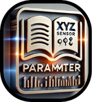
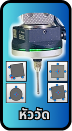
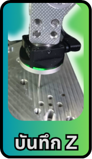
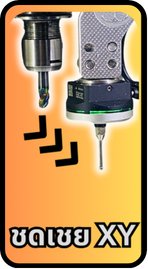
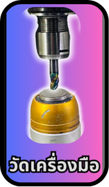

ค่าพารามิเตอร์ รวมค่าตัวเลขที่ปรับเทียบแล้ว ปรับค่าได้เพื่อความแม่นยำสูงสุด Toolsetter Auto ปรับค่าแค่ ±0.01-1mm
การสอบเทียบ ระบบสอบเทียบกึ่งอัตโนมัติ ใช้เวลาประมาณ 5 นาที ระบบช่วยตั้งค่าพร้อมภาพประกอบ ควรดูวิดีโอก่อนเริ่ม เพื่อความเข้าใจที่ดีขึ้น แก้ไขปัญหา 3D Probe หรือหัววัดได้ง่ายขึ้น เตรียมแผ่นพลาสติกแข็ง/อะลูมิเนียม และดอกสว่าน 6 มม.

หัววัด (Probe) ระบบวัดอัตโนมัติทั้งหมด วัดระนาบ, แกน X/Y และความยาวเครื่องมือ ควบคุมได้ทั้งจอยสติ๊กและกล้อง

บันทึกแกน Z (Z Save) คำสั่งอิสระสำหรับคำนวณความสูงของชิ้นงาน (แกน Z) ใช้ร่วมกับการวัดความยาวเครื่องมือ

ชดเชยแกน X/Y (XY Compensation) ฟังก์ชันอิสระสำหรับชดเชยค่าการวัด เพิ่มความแม่นยำในการตั้งตำแหน่งชิ้นงาน

วัดความยาวเครื่องมือ (Tool Length Measurement) ออกแบบให้ใช้งานแยกอิสระ เลือกโหมดการใช้งานตามต้องการ ศึกษาคู่มือก่อนใช้เพื่อความแม่นยำ